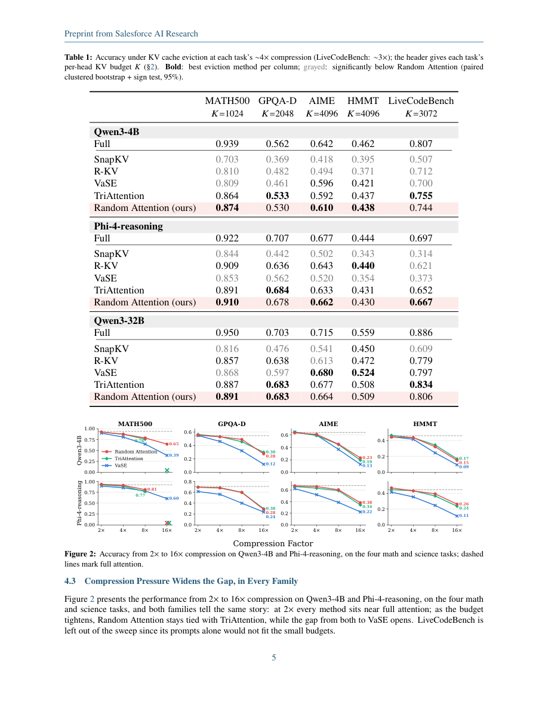

#1
★ 8/10
Random Attention: Rethinking KV Cache Eviction for Efficient Reasoning
Random Attention: Rethinking KV Cache Eviction for Efficient Reasoning

图 Figure · Page 5 of paper
🎯 （AI 中文深度分析暂不可用：Anthropic API 额度不足。英文栏为论文原文摘要，下方链接均可正常访问。）
Large language models achieve superior performance on tasks that require extended reasoning, but long chains of thought make the KV cache a severe memory bottleneck
| 维度 | 中文 | English |
|---|---|---|
| ❓ 待解决 的问题 |
（AI 中文深度分析暂不可用：Anthropic API 额度不足。英文栏为论文原文摘要，下方链接均可正常访问。） | Large language models achieve superior performance on tasks that require extended reasoning, but long chains of thought make the KV cache a severe memory bottleneck. Existing KV cache compression methods share one paradigm: score each cached token by some estimate of how much it will matter later, and keep the top-scoring ones. We show that the selection signal contributes almost nothing. Random Attention keeps the prompt and evicts uniformly at random within each attention head, computing no score at all; across four models and six reasoning tasks it matches the strongest prior evictor while serving 32-43% higher throughput than it in vLLM deployment. Controlled experiments explain this by showing that 1) the prompt is the fragile part of the cache, and most of the gap between selectors is just whether their selection signal happened to keep it; 2) the reasoning trace protects itself against eviction with redundancy at two levels, in the text (the model restates what it still needs as it works) and across attention heads (each keeps its own copy of the trace), so once the prompt is safe, a random draw retains enough copies of what the model still needs, and no score is required to pick them. Our code is publicly available at https://github.com/SalesforceAIResearch/Random-Attention. |
| 💡 解决 的亮点 |
（AI 中文深度分析暂不可用：Anthropic API 额度不足。英文栏为论文原文摘要，下方链接均可正常访问。） | See the paper’s original abstract in the "Problem / 背景" row above. |
| 🧪 实验 内容 |
（AI 中文深度分析暂不可用：Anthropic API 额度不足。英文栏为论文原文摘要，下方链接均可正常访问。） | See the paper’s original abstract in the "Problem / 背景" row above. |
| 📊 实验 结果 |
（AI 中文深度分析暂不可用：Anthropic API 额度不足。英文栏为论文原文摘要，下方链接均可正常访问。） | See the paper’s original abstract in the "Problem / 背景" row above. |
| 🏁 结论 | （AI 中文深度分析暂不可用：Anthropic API 额度不足。英文栏为论文原文摘要，下方链接均可正常访问。） | See the paper’s original abstract in the "Problem / 背景" row above. |
| 🔗 论文 链接 |
arXiv: 2609.03430v1 · 📥 PDF | |
⚙️ Method · 方法详解
（AI 中文深度分析暂不可用：Anthropic API 额度不足。英文栏为论文原文摘要，下方链接均可正常访问。）
See the paper’s original abstract in the "Problem / 背景" row above.
🌟 Why It Matters · 为什么重要
（AI 中文深度分析暂不可用：Anthropic API 额度不足。英文栏为论文原文摘要，下方链接均可正常访问。）
See the paper’s original abstract in the "Problem / 背景" row above.